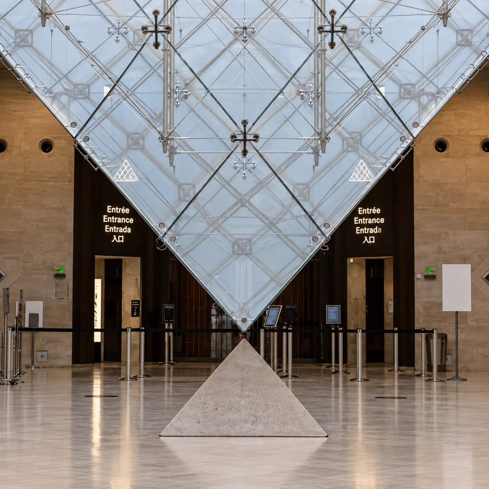
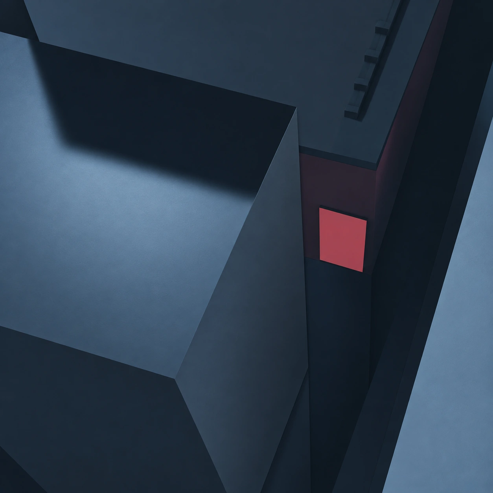
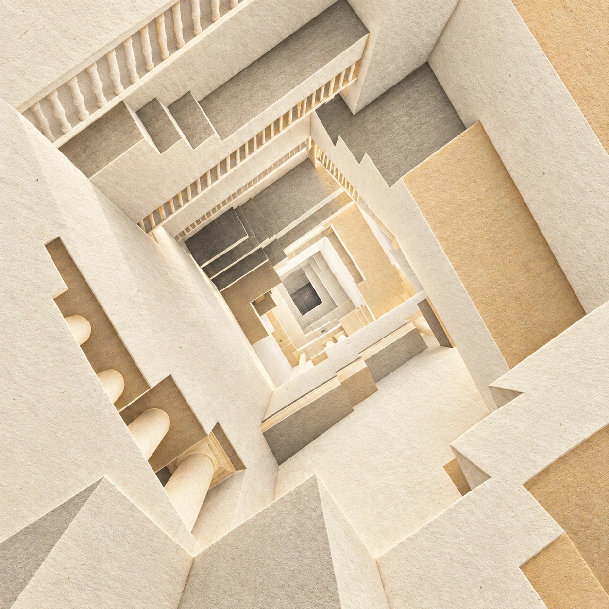

SELECTED WORKS
Index.
作品目录
04 WORKS / 全部作品

尖尖奇旅
Grow Shrink Venture
游戏 · 关卡设计 · 个人作品
时之诅咒
The Curse of Time
游戏 · 关卡设计 · 个人作品

相位匕首：创生档案
Phase Dagger: Genesis Dossier
游戏 · 关卡设计 · 个人作品

迷失之塔
The Dantean Spire
游戏 / 其他 · 空间叙事 / 动画 · 小组作品
TO BE CONTINUED
作品整理中
新的作品正在整理，稍后会在这里与你见面。
返回作品集，查看待更新专辑 ↗